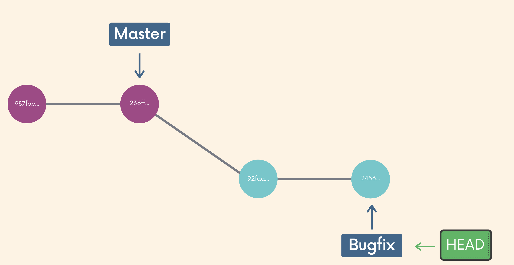

Git 101: Merge vs Rebase (P2)
Merge
Ở bài trước chúng ta đã tìm hiểu cơ bản về branch. Giờ chuyển branch và viết tính năng mới xong rồi, vậy làm sao để chuyển code ở nhánh mới về lại nhánh chính (ở đây mình coi như là master)?
Git cung cấp chúng ta 1 công cụ để giải quyết vấn đề trên, đó là git merge.
2 bước để merge:
- Chuyển sang nhánh cần merge
- Gõ lệnh
git merge <tên nhánh cần merge vào nhánh hiện tại>
Lý thuyết là vậy, thực tế nó sẽ xảy ra 3 trường hợp khi merge:
- fast-forward merge
- merge không bị conflict
- merge có conflict
Fast-forward Merge
Fast-forward merge xảy ra khi nhánh cần merge vào (ở trên hình là bugfix) có toàn bộ commit của nhánh hiện tại (master).

Lúc này, git sẽ merge toàn bộ commit của nhánh bugfix vào nhánh master như hình dưới.

Merge không có conflict
Trường hợp này xảy ra khi nhánh cần merge vào không có toàn bộ commit của nhánh hiện tại. Tuy nhiên, không có file nào bị sửa chung ở những commit đấy và những commit mới ở nhánh cần merge.

Khi merge, git sẽ tự động merge và tạo 1 commit mới ở nhánh hiện tại như sau.

Merge có Conflict
Xảy ra khi nhánh cần merge và nhánh hiện tại đều chứa commit mà nhánh kia chưa có trong lịch sử và những commit đấy đều sửa chung đến 1 file.
Khi gõ lệnh git merge, git sẽ tự động merge những file không bị xung đột code, và hiển thị các file bị xung đột code. Chúng ta cần vào từng file và xem xem cần lấy đoạn code nào.

Rebase
Để kết hợp code của các nhánh với nhau, ngoài git merge , chúng ta còn có 1 công cụ khác, đó là git rebase . Có rất nhiều quan điểm về lệnh này. Có người không bao giờ dùng mà chỉ dùng git merge, có người lại ưu tiên dùng nhiều git rebase hơn. Tuy nhiên, cho dù có ý kiến ý có thế nào, phần lớn mọi người đều có đồng quan điểm là, git rebase chỉ nên dùng nếu bạn thật sự hiểu bạn đang định làm gì với nó 😂. Oki, vậy bắt đầu tìm hiểu về nó nào.
Tương tự như merge, để rebase, chúng ta cũng thực hiện 2 bước đơn giản sau:
- switch sang nhánh cần rebase
- gõ lệnh
git rebase <nhánh muốn rebase vào nhánh hiện tại>.

Ở hình trên, có thể thấy rằng, lịch sử commit sẽ có rất nhiều merge commit dư thừa không cần thiết. Và việc giữ cho lịch sử commit sạch, gọn gàng cũng là 1 điều tương đối cần thiết trong các dự án lớn. Do vậy, trong trường hợp này, thay vì merge thì chúng ta có thể dùng rebase.

Có thể thấy rằng thay vì tạo các merge commit, rebase sẽ đẩy toàn bộ commit của nhánh master lên trước commit của nhánh bugfix. Do vậy, lịch sử commit lúc này sẽ theo 1 đường thẳng, dễ nhìn hơn.
Quy tắc: chỉ dùng rebase ở những nhánh cá nhân, tức là nhánh đó chỉ có duy nhất bạn sử dung, người khác không dùng đến. Nguyên nhân ở đây là do khi rebase, lịch sử commit sẽ bị thay đổi, và khi đồng nghiệp lấy code của bạn về sẽ bị loạn. Với các nhánh mà nhiều người sử dụng, merge là lựa chọn sáng suốt và duy nhất nên sử dụng.
Rebase interactive - chỉnh sửa lịch sử commit
Git rebase không chỉ là 1 công cụ để tích hợp code ở các nhánh khác nhau, mà nó còn được dùng để gộp, xóa, thay đổi lịch sử commit.
git rebase -i <commit-hash>
Git sẽ lấy danh sách toàn bộ commit từ commit-hash đến vị trí con trỏ HEAD hiện tại, và hiển thị editor để người dùng có thể áp dụng các tùy chọn dưới đây cho mỗi commit:
- pick: giữ nguyên commit (mặc định)
- reword: đổi commit message
- squash: chuyển thay đổi vào commit trước đó, hiện editor để điền commit gộp với commit trước đó
- fixup: chuyển những thay đổi vào commit trước đó, đồng thời xóa luôn commit.
- drop: xóa commit
Tham khảo: